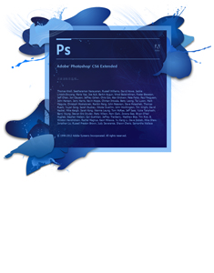

专业技能
喜欢学习了解各种有趣的东西，对未知的事物充满好奇，大学期间自学了Linux系统的简单操作，了解信息安全的基本知识，熟练掌握PS抠图和五笔输入法
Linux
系统安装-系统分区，了解命令格式与目录处理命令，文本编辑器Vim的基本操作，利用aircrack-ng工具破解wifi密码

PS
制作gif动态图片，了解Alpha通道和蒙版，熟练使用钢笔进行无损抠图和色彩范围抠图，了解滤镜的使用

信息安全
了解信息安全的三要素，了解安全框架的五个安全等级，利用U盘启动工具进行window系统密码的修改
五笔输入法
熟悉字根，了解五笔编码的规律，掌握拆字原则，知道五个笔划在键盘上的分布特点，可以准确的进行单个字的盲打